Nourish Your Body With Nature's Goodness
A traditional-style blend made with multi-grains, millets, pulses, nuts, and seeds — along with microgreens — crafted for everyday family meals.
A traditional-style blend made with multi-grains, millets, pulses, nuts, and seeds — along with microgreens — crafted for everyday family meals.
Amroth makes traditional nutrition simple and fast for your busy life.
(Spices, cutting, stress - we've all been there!)
“తాలింపు అవసరం లేదు… నీటిలో కలిపేయండి, బాయిల్ చేయండి, రుచిని ఆస్వాదించండి!”
“హాస్టల్ లైఫ్ లో బెస్ట్ ఫ్రెండ్ – AMROTH Sambar Mix”
“ఆఫీస్ నుండి వచ్చాక కుకింగ్ స్ట్రెస్ ఆ? ఇదే solution”
Key highlights of our traditional-style food range
Just mix and cook - no need for extra tempering steps.
Authentic flavors that remind you of home-cooked meals.
Ready in just 10 to 15 minutes, perfect for busy lifestyles.
Powered by pulses, millets, grains, nuts, and seeds
Overview of key nutrients naturally present in the ingredients
Discover our range of wholesome, convenient, and family-friendly food products
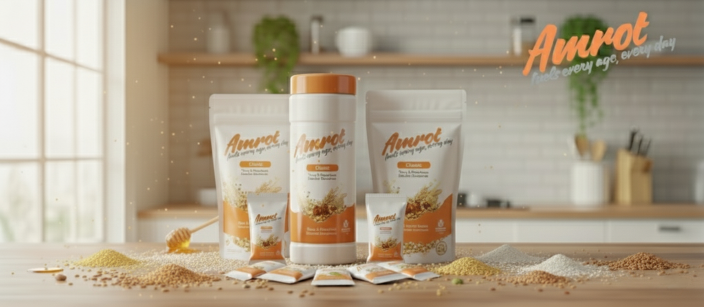
Wholesome Multigrain Food Mix
A wholesome multigrain food powder made with carefully selected cereals, pulses, nuts, and millets.
Roasted to enhance flavor and prepared without artificial colors or preservatives.
Contains naturally occurring plant protein and fiber from traditional ingredients and is suitable for daily family use as part of regular meals.
Sorghum (Jonnalu), Finger Millet – Ragi (Ragulu), Pearl Millet – Bajra (Sajjalu), Foxtail Millet (Korralu), Wheat (Godhumalu), Rice (Biyyam), Oats, Barley, Green Gram – Moong Dal (Pesalu), Black Gram – Urad Dal (Minumulu), Bengal Gram – Chana Dal (Sanagalu), Cashew Nuts (Jeedipappu), Almonds (Badam Pappu), Pistachios (Pista), Walnuts, Groundnuts / Peanuts (Verusenaga), Sesame Seeds (Nuvvulu), Poppy Seeds (Gasagasalu), Flax Seeds (Aviselu), Cumin Seeds (Jeelakarra), Fenugreek Seeds (Menthulu), Black Pepper (Miriyalu), Cardamom (Elakulu), Cloves (Lavangalu)
Cleaning → Sorting → Roasting → Cooling → Pulverizing → Sieving → Blending → Packing
Shelf Life: 6 months (subject to stability validation). Store in a cool, dry place and keep the container tightly closed after opening.
To be consumed after cooking with water.
Add 20gm of Amroth Protein Powder to 1/4 litre (250ml) water. Boil for 20 minutes while stirring continuously. Sweeten naturally if desired and serve hot.
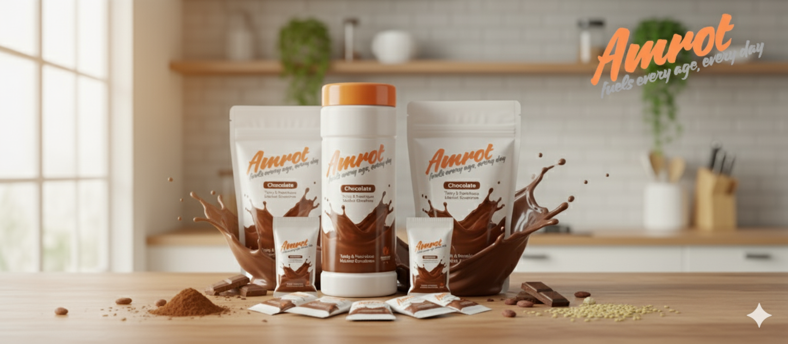
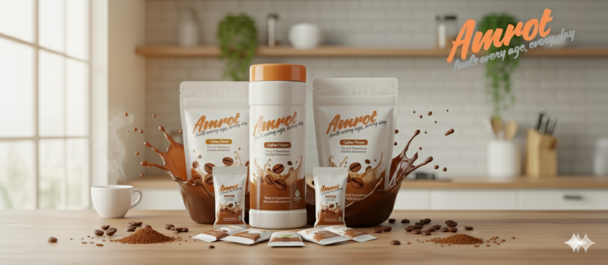
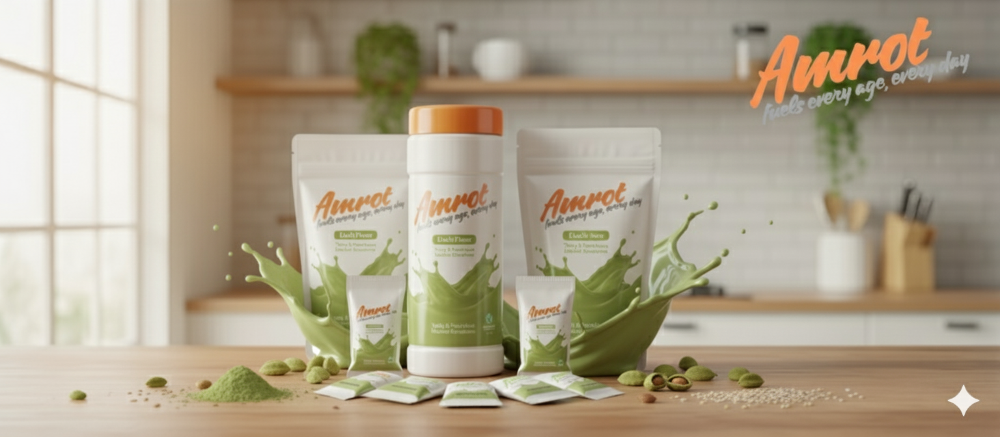
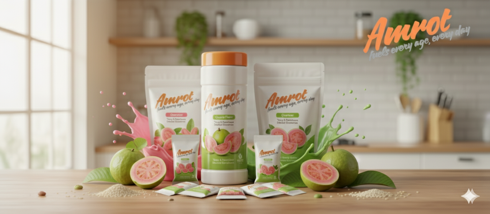
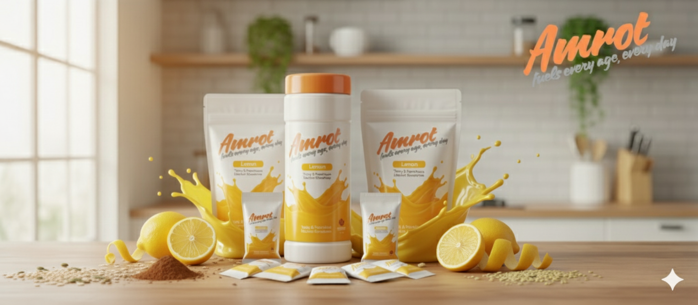
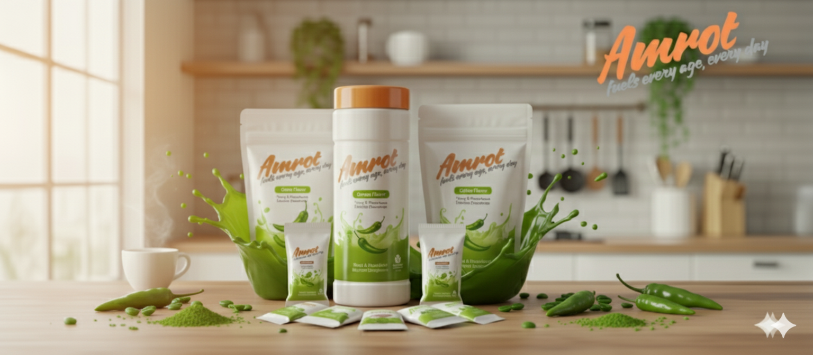
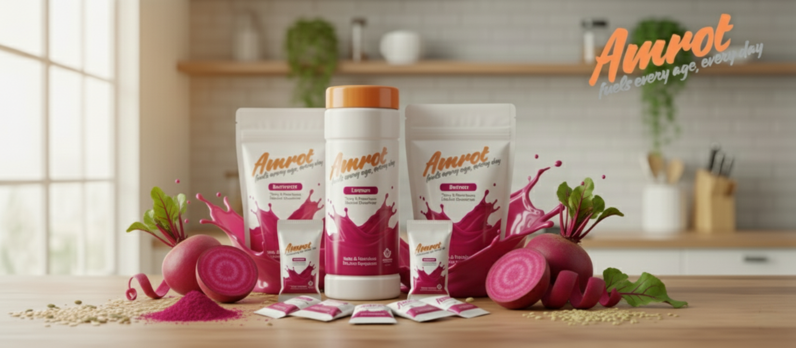
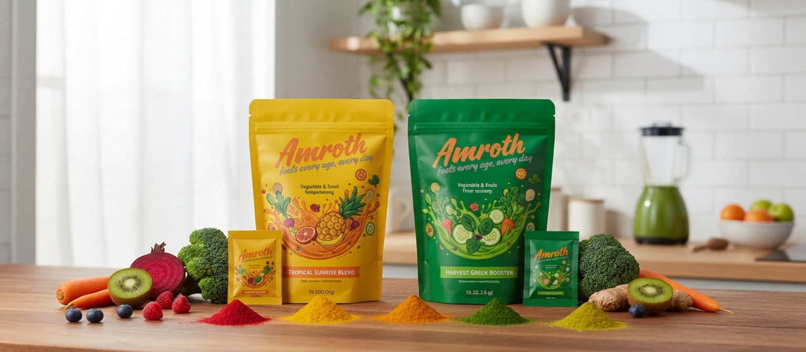
Natural Vegetable & Fruit Powders
Dehydrated vegetable and fruit food powders made from carefully selected produce. Ideal for adding traditional flavor and color to everyday meals and beverages.
Beetroot Powder, Carrot Powder, Spinach Powder, Tomato Powder, Banana Powder, Mango Powder.
Shelf Life: 9 months (subject to moisture control). Store in an airtight container away from moisture and sunlight.
Used in beverages, bakery, culinary, and traditional preparations.
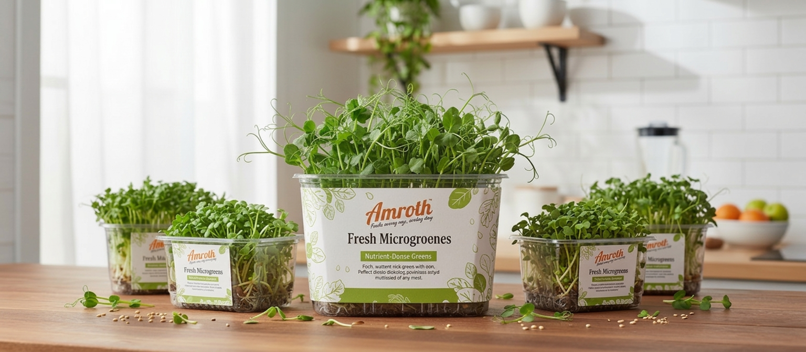
Fresh Microgreen Greens
Fresh microgreens grown with care. Ideal for salads, garnishing, and adding color and texture to everyday dishes.
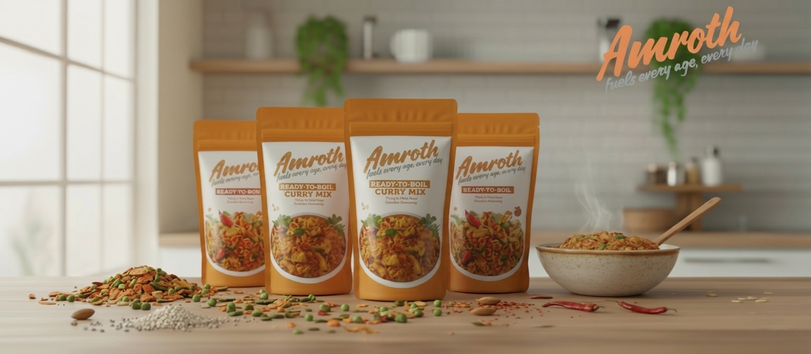
Traditional Ready-to-Cook Curry Mixes
Traditional spice and lentil blends made from dehydrated vegetables and roasted spices. Just add water and boil for an easy, home-style South Indian curry.
Black Gram – Urad Dal (Minumulu), Green Gram – Moong Dal (Pesalu), Bengal Gram – Chana Dal (Senaga Pappu), Red Gram – Toor Dal (Kandi Pappu), Roasted Bengal Gram – Chutney Dal (Pachi Senaga Pappu), Tamarind (Chintapandu), Dry Red Chilli (Endu Mirchi), Coriander Seeds (Dhaniyalu), Cumin Seeds (Jeelakarra), Fenugreek Seeds (Menthulu), Black Pepper (Miriyalu), Garlic (Vellulli), Ginger (Allam), Curry Leaves (Karivepaku), Asafoetida – Hing (Inguva), Turmeric (Pasupu), Salt (Uppu), Jaggery (Bellam).
Shelf Life: 9 months. Store in a cool, dry place in an airtight container.
Add required quantity to water, boil for 20 minutes, and serve. Vegetables may be added if desired.
Add 20gm of Amroth Instant Sambar Mix to 1/4 litre (250ml) water. Boil for 20 minutes while stirring. Add cooked vegetables if desired. Serve hot with rice, idli, or dosa.
Enjoy your favorite meal in 3 easy steps
Water boil
Add mix
Ready in 10 to 15 mins
Answers to common questions about Amroth and our products
Amroth is our product family of clean, ingredient-focused foods that includes Microgreens, Protein Powders, and a Health Drink Mix — each prepared from millets, pulses, grains, nuts, seeds, and spices for everyday family meals.
For both the Health Drink Mix and Instant Sambar, the preparation is simple: Mix 20gms of the powder into 1/4 litre (250ml) of water and boil for 20 minutes to ensure a smooth, well-cooked result.
Yes. Amroth products are designed as family-friendly food options. For toddlers or specific dietary needs, consult a healthcare professional for personalized guidance.
No. Amroth products contain no eggs, no maida, and no refined sugar. They are crafted without added oils or preservatives.
Amroth offers a clean, ingredient-based alternative alongside regular milk. The Health Drink Mix can be consumed with water; other Amroth items complement a balanced diet.
Amroth items are plant-based. Prepared with water, the Health Drink Mix fits a vegan-friendly routine.
Amroth Health Drink Mix is a blend created with multi-grains, millets, pulses, seeds, and nuts. It is a convenient, wholesome food option that can be enjoyed along with regular meals.
Amroth is suitable for all age groups as a wholesome family food made from millets, pulses, grains, nuts, and seeds, when enjoyed as part of a regular, balanced diet.
Amroth Health Drink Mix (Protein Power) brings together 25 natural ingredients:
Proteins from pulses, nuts, and seeds; carbohydrates from grains and millets; dietary fiber from millets, oats, and legumes; healthy fats (omega-3 and omega-6) from nuts and seeds.
Vitamins A, B-complex (B1, B2, B3, B6, Folate), C, E, and K; trace Vitamin D. Minerals include Calcium (ragi, sesame, almonds), Iron (chana, ragi, moong, sesame, flax), Magnesium (nuts, seeds, grains), and Zinc (seeds and legumes).
Store in a cool, dry place in an airtight container once opened. Since we use no preservatives, our products are best consumed within the recommended shelf life printed on the pack (typically 6-9 months) to enjoy maximum freshness and nutritional value.
While Amroth Health Drink Mix is wholesome on its own, you can customize it by adding natural sweeteners like jaggery or honey after boiling, or enjoy it in its natural savory form.
Srivallabha Sustainable Solutions Pvt Ltd is a food startup focused on wholesome, convenient food products. Our mission is to provide ready-to-use food solutions that cater to urban and semi-urban consumers while promoting better food choices and sustainability.
State-of-the-art facilities designed for quality and scalability
Located in Takkellapadu Village, Nandigama Mandal, Amaravathi District, Andhra Pradesh with excellent connectivity and access to raw materials.
Coordinates: 16.790191846567048° N, 80.2311484920132° E
Modern sheds under construction with planned utilities for efficient production.
Status: Under Construction
Utilities: Water & Electricity Planned
Infrastructure designed to allow rapid scale-up as demand grows.
Land: Ready for Operations
Expansion: Future-Ready Design
We are seeking seed funding and incubation support to accelerate our growth and bring our innovative products to market.
Finalize product formulations and packaging
Establish small-scale production facilities
Connect with industry experts and networks
Type of Support: Grants / Seed funding (non-equity preferred)
Ready to partner with us or learn more about our products?
Lakshmikiran Jasthi
+91 7702741798
info@amroth.life
Takkellapadu Village, Nandigama Mandal, Amaravathi District, Andhra Pradesh, India